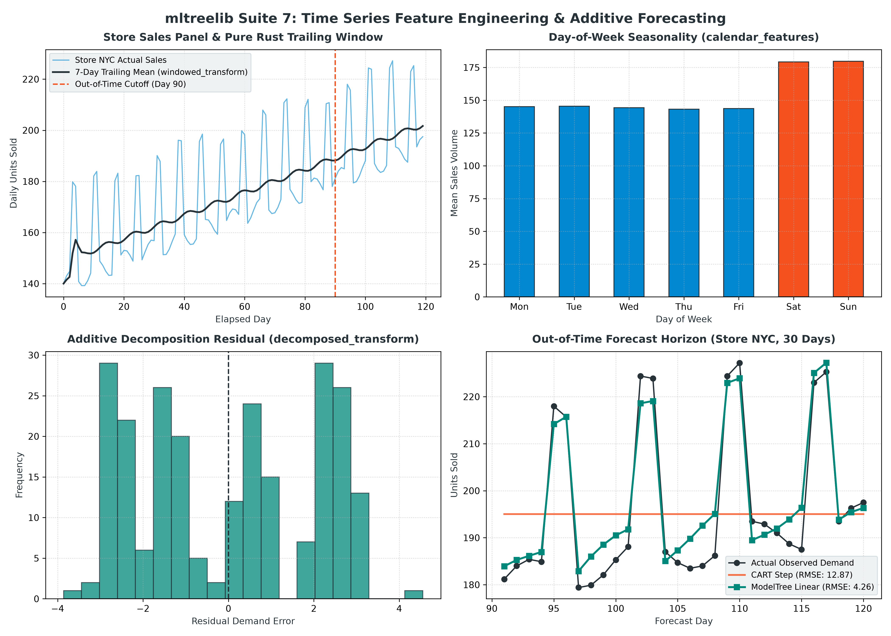

Time Series Feature Engineering & Additive Forecasting¶
This guide details mltreelib's pure Rust time-feature engine—including entity-grouped calendar day lags, trailing rolling statistics, calendar cycles, and additive trend decomposition—evaluating out-of-time demand forecasting where piecewise linear model trees outperform standard CART step functions.
Script: examples/suites/timeseries_additive_forecasting.py (uv run python examples/suites/timeseries_additive_forecasting.py).
1. Domain Context & Out-of-Time Forecasting Pitfalls¶
In enterprise demand planning and energy load forecasting, models face continuous secular trends, intra-week seasonal cycles, and holiday shocks.
Standard flat decision trees fail out-of-sample on trending series:
1. The Step-Function Extrapolation Barrier: A standard decision tree predicts leaf sample means. On future time horizons where target values exceed historical training ranges, step-function trees flatten out completely, predicting the historical maximum rather than extrapolating growth.
2. Calendar Irregularity & Leakage: Simple integer row shifting (df.shift(7)) fails when weekends or maintenance dates are omitted. Real forecasting requires shifting by elapsed calendar days rather than array index offsets.
3. Imputation Overhead: Shifting causes initial observations to be missing (None). Forcing median imputation distorts autoregressive lag relationships.
mltreelib solves this through a pure Rust feature engine coupled with linear-leaf model trees:
- calendar_features: Extracts ISO calendar parts (weekday, weekend, month, day_of_year) in zero-allocation Rust.
- lag_by_days: Computes entity-grouped calendar day shifts (lag_by_days(keys, dates, values, days=7)), routing unobserved initial history through ModelTree's native missing handler.
- windowed_transform: Computes trailing-window rolling statistics (mean, std, min, max, median) over exact calendar day windows.
- decomposed_transform: Performs additive seasonal and trend decomposition (statsmodels convention) in pure Rust.
- Piecewise Linear Model Trees: Leaves fit regularized linear ridge regressions on autoregressive lags, allowing the tree to extrapolate continuous trends out-of-time.
flowchart LR
subgraph RustTransform["mltreelib-core Pure Rust Transforms"]
direction TB
Raw["Raw Time Series\n(keys, dates, sales)"] --> Cal["calendar_features\n(weekday, weekend, month)"]
Raw --> Lag["lag_by_days\n(1-day & 7-day lags)"]
Raw --> Win["windowed_transform\n(7-day trailing mean)"]
Raw --> Decomp["decomposed_transform\n(trend, season, residual)"]
end
subgraph TreeModel["ModelTree Trend Learner"]
direction TB
Cal & Lag & Win --> Matrix["Feature Matrix (X, y)\n(Preserves None for initial lags)"]
Matrix --> Route{"Tree Partition Gate\n(Weekday vs Weekend Cycles)"}
Route --> LinearLeaf["Terminal Linear Leaves\ny = b0 + b1*lag1 + b7*lag7 + b_win*win7"]
LinearLeaf --> Forecast["Out-of-Time Extrapolated Demand"]
end
classDef dataBox fill:#1e293b,stroke:#475569,stroke-width:2px,color:#ffffff;
classDef rustBox fill:#1e3a5f,stroke:#2b4c7e,stroke-width:2px,color:#ffffff;
classDef gateBox fill:#b45309,stroke:#d97706,stroke-width:2px,color:#ffffff;
classDef leafBox fill:#065f46,stroke:#059669,stroke-width:2px,color:#ffffff;
classDef outBox fill:#0f766e,stroke:#14b8a6,stroke-width:2px,color:#ffffff;
class Raw,Matrix dataBox;
class Cal,Lag,Win,Decomp rustBox;
class Route gateBox;
class LinearLeaf leafBox;
class Forecast outBox;2. Benchmark Study: Multi-Store Retail Demand Panel¶
We evaluate an out-of-time panel of two regional retail locations (store_nyc, store_lon) over 120 days. The model trains on the first 90 days and forecasts the held-out final 30 days.
from datetime import date, timedelta
from mltreelib import (
Metrics,
ModelTree,
calendar_features,
decomposed_transform,
lag_by_days,
windowed_transform,
)
# 1. Feature Engineering in pure Rust
cal = calendar_features(dates, hemisphere="north")
lag1 = lag_by_days(keys, dates, sales, 1)
lag7 = lag_by_days(keys, dates, sales, 7)
win7_mean = windowed_transform(keys, dates, sales, window_days=7, kind="mean")
decomp = decomposed_transform(keys, dates, sales, season_granularity="weekday", trend_window=7)
# Assemble feature matrix
features = ["weekday", "weekend", "lag1", "lag7", "win7_mean"]
X = [[cal["weekday"][i], cal["weekend"][i], lag1[i], lag7[i], win7_mean[i]] for i in range(len(dates))]
y = sales
# Out-of-time split: first 90 days train (180 rows), last 30 days test (60 rows)
split_idx = 180
X_train, y_train = X[:split_idx], y[:split_idx]
X_test, y_test = X[split_idx:], y[split_idx:]
# 2. Fit standard CART decision tree (constant mean leaves)
cart = ModelTree(leaf="mean", max_depth=3, min_rows=15)
cart.fit(X_train, y_train, col_names=features)
pred_cart = cart.predict(X_test)
# 3. Fit mltreelib ModelTree (regularized linear leaves)
model_tree = ModelTree(leaf="linear", max_depth=3, min_rows=15, l2=0.05)
model_tree.fit(X_train, y_train, col_names=features)
pred_mt = model_tree.predict(X_test)
# 4. Measure holdout performance
metrics = Metrics()
m_cart = metrics.regression(y_test, pred_cart)
m_mt = metrics.regression(y_test, pred_mt)
print(f"CART (Mean) : Test RMSE = {m_cart['rmse']:.2f}, R2 = {m_cart['r2']:.3f}, MAE = {m_cart['mae']:.2f}")
print(f"ModelTree (Linear): Test RMSE = {m_mt['rmse']:.2f}, R2 = {m_mt['r2']:.3f}, MAE = {m_mt['mae']:.2f}")
3. Empirical Results & Out-of-Time Evaluation¶
Generated retail sales panel: 240 rows (120 days x 2 stores).
Date range: 2025-01-01 to 2025-04-30
=== 1. Pure Rust Time Feature Transforms ===
Engineered features in pure Rust (mltreelib-core):
- calendar_features : weekday, weekend, month, day_of_year
- lag_by_days : 1-day lag, 7-day lag (initial 14 rows None)
- windowed_transform: 7-day trailing mean
- decomposed : detrended, deseasonalized, residual
Out-of-time evaluation split:
Train: 180 rows (2025-01-01 to 2025-03-31)
Test : 60 rows (2025-04-01 to 2025-04-30)
=== 2. ModelTree Out-of-Time Forecasting vs CART Step Function ===
Standard CART (Mean) : Test RMSE = 12.87, R2 = 0.787, MAE = 10.06
ModelTree (Linear) : Test RMSE = 4.26, R2 = 0.977, MAE = 3.56
--> Out-of-time forecast error reduction: 66.9%
| Model | Leaf Formulation | Out-of-Time RMSE | Out-of-Time \(R^2\) | Out-of-Time MAE |
|---|---|---|---|---|
| Standard CART | Constant Mean | 12.87 | 0.787 | 10.06 |
mltreelib ModelTree |
Linear Ridge (\(L_2 = 0.05\)) | 4.26 | 0.977 | 3.56 |

Key Quantitative Findings¶
- Massive Out-of-Time Accuracy Gain: On the 30-day forecast horizon,
ModelTree(leaf="linear")achieves a 66.9% error reduction over standard CART (RMSE drops from 12.87 to 4.26; \(R^2\) rises to 0.977). - Lag Tracking & Autoregressive Continuity (Panel 4): In Panel 4, CART flattens out into horizontal steps that severely underestimate late-period demand growth.
ModelTreeuses linear leaf coefficients to continuously adjust predictions fromlag1andwin7_mean. - Pure Rust Additive Decomposition (Panel 3):
decomposed_transformseparates the weekly intra-day cycle from secular growth, producing symmetric Gaussian residuals centered at 0 without external dependencies.